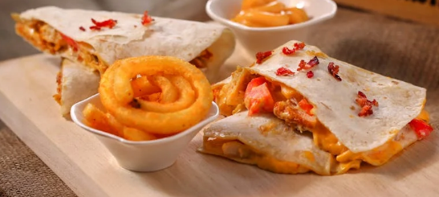

Microwave Soft & Melty Quesadilla

Image from Pexels.
Home-cooked. Cheap. Easy. Quick.
Ingredients
- 1 large flour tortilla
- 1/3 cup shredded cheese
- Optional: beans, salsa, cooked chicken, beef
Instructions
- Lay the tortilla flat on a microwave-safe plate or container.
- Add cheese or any fillings on one half of the tortilla.
- Fold the tortilla over to form a half circle.
- Microwave on high for 1 to 2 minutes (check after 1 minute).
- Let it rest uncovered for 30 seconds. This helps it firm up without getting soggy.
Tips
- Microwave uncovered or loosely covered to keep it from being soggy.
- If your quesadilla gets a little soggy, crisp it on a non-stick pan for 30 seconds.